データを取り込んで初期設定する
各マスタメニューの登録に必要な情報が記載されているエクセルデータを勤怠RECOに取り込みます。データを取り込むと、各マスタにデータが即時に反映されます。勤怠RECOの各マスタメニューでデータを1件ずつ登録する手間を省きます。
データの取り込みは［データインポート］メニューで実施します。
ご注意 |
データインポートを操作できるのは、システム管理者アカウントのみです。 |
|---|
 勤怠RECO［管理用］操作マニュアル
勤怠RECO［管理用］操作マニュアル
勤怠RECO［管理用］
操作マニュアル
各マスタメニューの登録に必要な情報が記載されているエクセルデータを勤怠RECOに取り込みます。データを取り込むと、各マスタにデータが即時に反映されます。勤怠RECOの各マスタメニューでデータを1件ずつ登録する手間を省きます。
データの取り込みは［データインポート］メニューで実施します。
ご注意 |
データインポートを操作できるのは、システム管理者アカウントのみです。 |
|---|
データインポートの操作をする前に、インポートするエクセルデータを作成してください。データは勤怠RECOにあるテンプレートを使用して作成します。ここでは「部課マスタ取込」を例に説明します。
［マスタ］をクリックし、［データインポート］にマウスオーバーし、表示されるサブメニューから［部課マスタ取込］を選択する
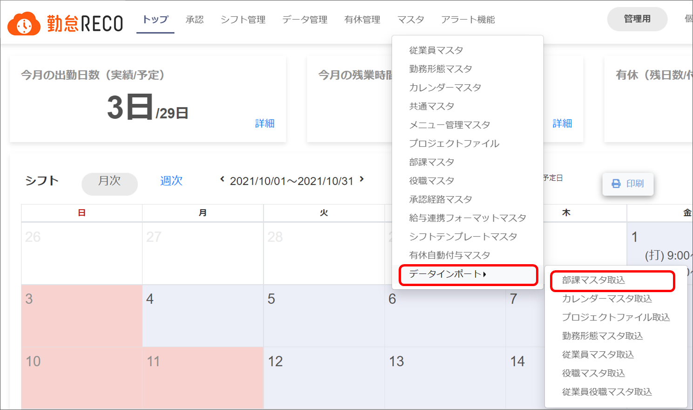
「部課マスタ取込」画面が表示されます。
［テンプレートダウンロード］ボタンをクリックする
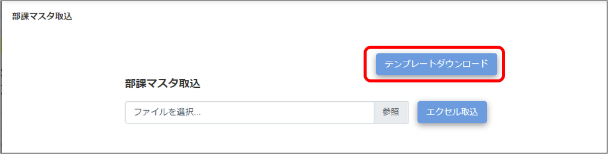
ダウンロードしたテンプレートファイルを開き、各マスタとして登録したい内容を入力し、保存する
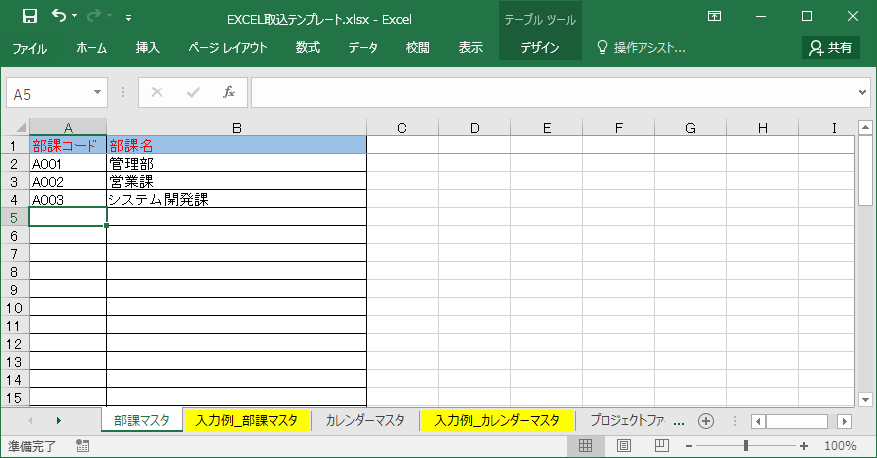
入力方法について詳細は、ダウンロードしたテンプレートファイルの「入力例_XXXX」のシートを参照してください。
ヒント |
|
|---|
ご注意 |
上書きする場合、登録済みマスタとコードが同じであれば上書き、未登録のコードであれば新規追加になります。 インポート前に各シートの内容を十分にご確認ください。 |
|---|
作成したインポート用マスタデータを取り込みます。ここでは「部課マスタ取込」を例に説明します。
［マスタ］をクリックして［データインポート］にマウスオーバーし、表示されるサブメニューから［部課マスタ取込］を選択する
選択したマスタの取込画面が表示されます。
ヒント |
この操作では、データインポートできる以下8つのマスタシートを一括ダウンロードできます（承認経路マスタはデータインポートできません）。
|
|---|
［参照］をクリックし、作成したテンプレートを選択し「開く」をクリックする
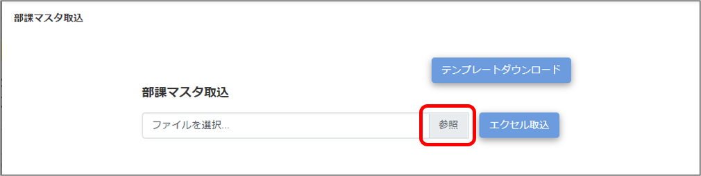
［エクセル取込］をクリックする
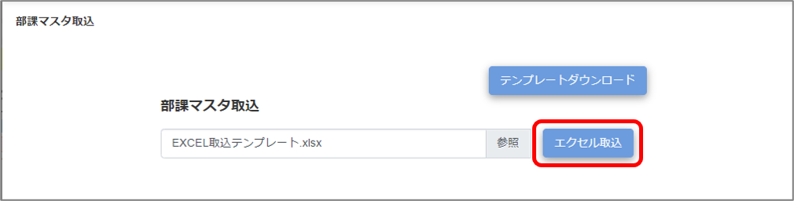
画面上部に「XX件のデータを取り込みました。」と表示され、部課マスタのデータがインポートされます。
ヒント |
|
|---|
ご注意 |
勤務形態マスタ取込において、時間種別の登録行数に上限はありません。ただし、22行以上時間種別を登録した勤務形態があると、それ以降の勤務形態がインポートされません。時間種別が多い勤務形態は最後にご登録ください。 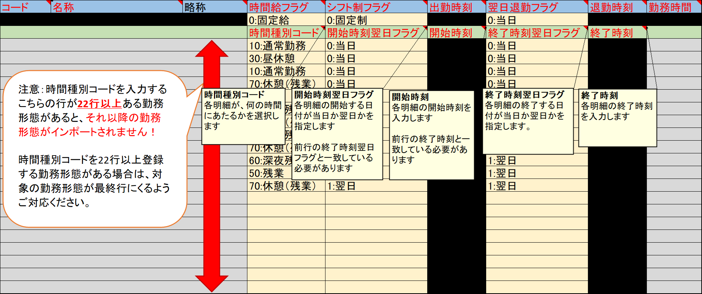 |
|---|
プロジェクトのマスタを勤怠RECOに登録するには、「プロジェクトファイル」と「プロジェクト承認者」の2つのマスタをインポートする必要があります。
［マスタ］をクリックし、［データインポート］にマウスオーバーし、表示されるサブメニューから［プロジェクトファイル取込］を選択する
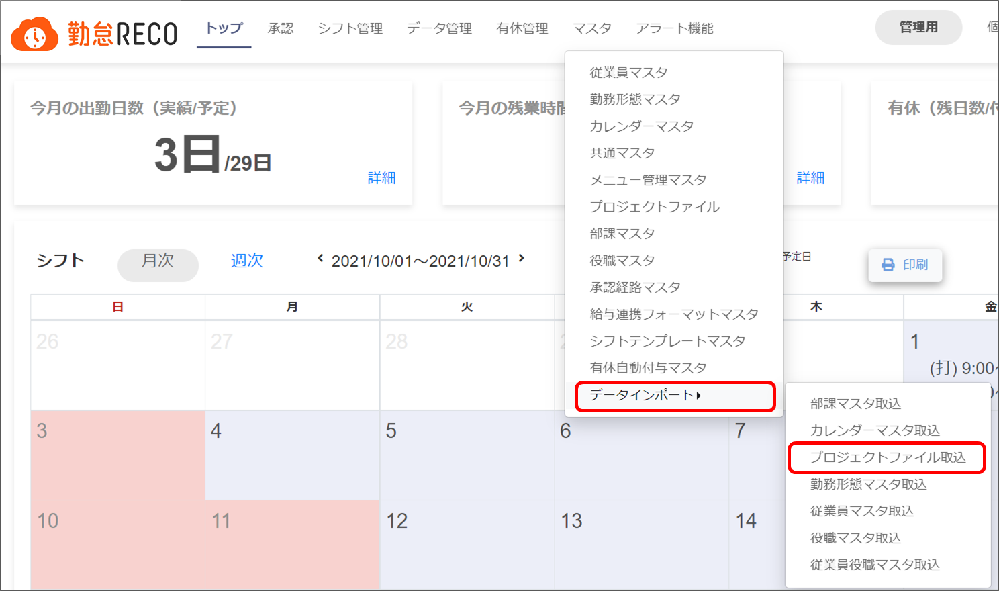
「プロジェクトファイル取込」画面が表示されます。
「プロジェクトファイル取込」の［参照］をクリックし、作成したテンプレートを選択し「開く」をクリックする
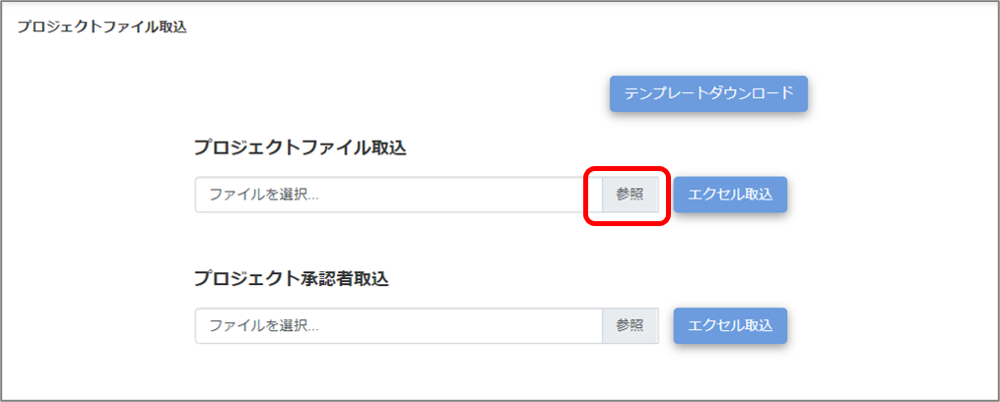
［エクセル取込］をクリックする
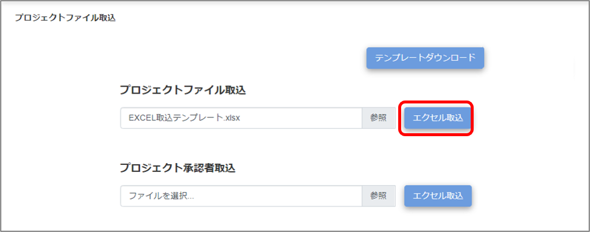
画面上部に「XX件のデータを取り込みました。」と表示され、プロジェクトファイルのマスタがインポートされます。
「プロジェクト承認者取込」の［参照］をクリックし、作成したテンプレートを選択し「開く」をクリックする
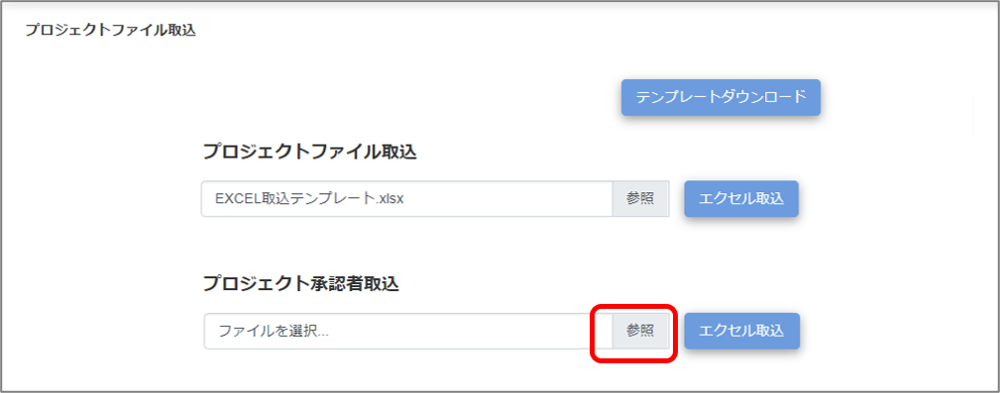
［エクセル取込］をクリックする
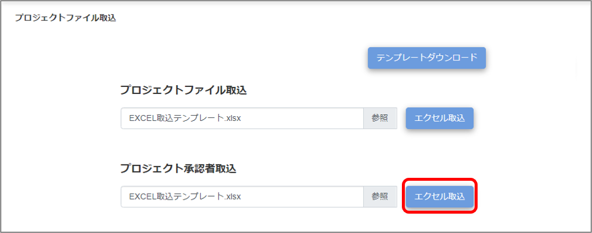
画面上部に「XX件のデータを取り込みました。」と表示され、プロジェクト承認者のマスタがインポートされます。